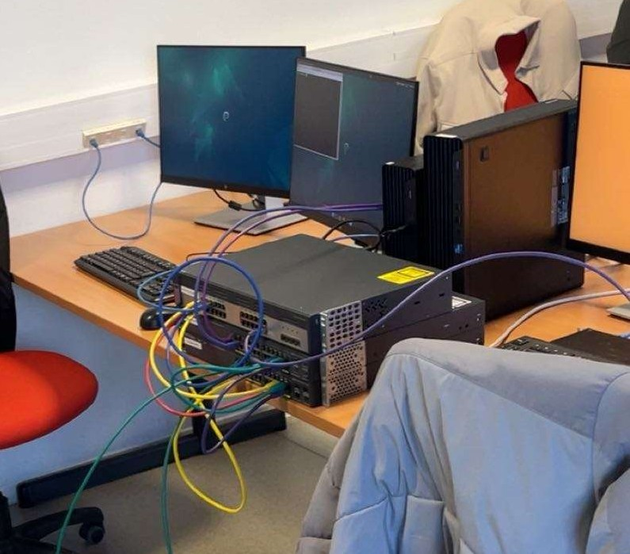

Mes SAÉ
Cliquez sur une SAÉ pour afficher sa fiche.
Sensibilisation à l'hygiène informatique
La SAÉ 11 avait pour objectif de nous sensibiliser aux enjeux de l'hygiène numérique et de la cybersécurité, deux thématiques fondamentales dans le domaine des réseaux et télécommunications. Le travail se déroulait en deux temps distincts.
Dans un premier temps, nous devions suivre et valider individuellement le MOOC de l'ANSSI (Agence Nationale de la Sécurité des Systèmes d'Information), une formation en ligne officielle portant sur les bonnes pratiques à adopter pour sécuriser ses usages numériques. L'obtention de la certification à l'issue de cette formation était un livrable attendu.
Dans un second temps, nous devions réaliser un travail de recherche en groupe sur un thème imposé en lien avec la cybersécurité. Notre groupe s'est vu attribuer le protocole SSH. L'objectif était de comprendre son fonctionnement technique, puis de le restituer à l'oral devant la classe à l'aide d'un support de présentation. La SAÉ comprenait également un TP de type Capture The Flag (CTF), permettant une première approche pratique de la sécurité informatique.
- J'ai suivi et complété le MOOC de l'ANSSI dans son intégralité, ce qui m'a permis d'obtenir la certification officielle et de consolider mes connaissances sur les bonnes pratiques de sécurité numérique.
- En groupe, nous avons mené des recherches approfondies sur le protocole SSH : son fonctionnement général, les mécanismes de chiffrement utilisés, ainsi que le principe de la paire de clés Publique/Privée et son rôle dans l'authentification sécurisée.
- J'ai participé activement à la création du support de présentation pour l'oral, en structurant les informations trouvées de manière claire et adaptée à une présentation devant la classe.
- Nous avons réalisé un TP de type Capture The Flag (CTF), qui nous a permis d'aborder les bases de la cybersécurité de façon pratique, en résolvant des challenges concrets liés à la sécurité informatique.
- Certification ANSSI obtenue
- Bonne compréhension du protocole SSH
- Entraînement à la présentation orale
- Première approche pratique de la cybersécurité via le CTF
- Formation MOOC longue, gestion du temps difficile
- Prise en main des outils de cybersécurité en partant de zéro
Voici notre support de présentation réalisé durant la SAE, concrètement la recherche effectuée sur le protocole SSH et la mise en pratique des bases de la cybersécurité.
Cette SAE m'a permis de revoir et d'apprendre les bonnes pratiques a adopter sur internet. L'oral m'a permis d'être un entrainement pour être plus a l'aise a l'oral devant mes camarades. Les recherches effectués sur le protocole SSH, m'ont montrer a quel point il est important dans les echanges entre client/serveur — ce qui m'a permis de progresser sur AC11.02 et AC11.04. Ce que j'aurai pu ameliorer sur cette SAE est la gestion du temps, en effet la formation MOOC de l'ANSSI est plutôt longue il ne fallait pas perdre trop de temps pour en garder suffisament pour preparer l'oral. À l'avenir, je veillerai à mieux planifier ce type de formation longue dès le début du projet.
S'initier aux réseaux informatiques
La SAÉ 12 avait pour objectif de concevoir et de déployer un réseau d'entreprise simplifié, en utilisant des équipements réels de marque Cisco. Il s'agissait d'une mise en pratique concrète des notions vues en cours sur les réseaux locaux, la segmentation par VLANs et l'administration de systèmes.
En groupe, nous devions réaliser l'architecture complète du réseau, c'est-à-dire produire à la fois un schéma physique (représentant le câblage réel des équipements) et un schéma logique (illustrant l'organisation logicielle du réseau : VLANs, adressage IP, DHCP). Nous devions ensuite configurer les équipements Cisco pour que le réseau soit fonctionnel.
En parallèle, plusieurs services réseau devaient être mis en place sur des machines virtuelles sous Linux/Debian, notamment un serveur DHCP, un serveur DNS et un service de partage de fichiers Samba. La SAÉ se concluait par une présentation orale du projet ainsi qu'un QCM basé sur les ressources du cours CCNA.
- Avant de démarrer le projet, nous avons organisé le travail en groupe en listant les différentes tâches à accomplir et en les répartissant entre chaque membre selon les compétences de chacun.
- J'ai réalisé le rétroplanning du projet, ce qui nous a permis de visualiser les étapes à respecter et de mieux gérer notre avancement dans le temps imparti.
- J'ai pris en charge une partie de la configuration des switchs Cisco de niveau 2, notamment la création et l'attribution des différents VLANs pour segmenter le réseau comme demandé.
- J'ai tenté de mettre en place le service Samba sur une machine Linux afin de permettre le partage de fichiers sur le réseau, mais je n'ai pas réussi à le faire fonctionner correctement, les notions nécessaires n'ayant pas encore été abordées en cours à ce moment-là.
- Nous avons présenté le projet en groupe devant la classe, en expliquant les choix techniques réalisés et l'architecture mise en place.
- J'ai utilisé les ressources du cours CCNA pour préparer le QCM associé à cette SAÉ, ce qui m'a permis de consolider les notions théoriques sur les réseaux locaux.
- Organisation du groupe avec rétroplanning
- Configuration fonctionnelle des VLANs
- Compréhension concrète d'un réseau d'entreprise
- Schémas physique et logique réalisés
- Service Samba non fonctionnel — notions non encore vues en cours
- Utilisation des machines virtuelles Proxmox complexe
- Manque de recul pour débloquer les problèmes rencontrés
Afficher le schema physique fait lors de cette SAE.
Ces deux schémas témoignent de ma compréhension de l'architecture réseau mise en place (AC11.02, AC11.03) : le schéma logique montre l'organisation des VLANs et du DHCP, tandis que le schéma physique retrace le câblage réel des équipements Cisco.

Cette photo montre l'installation physique réalisée lors de la SAÉ : on peut y voir les deux switchs Cisco empilés au centre de la table, reliés aux postes de travail par plusieurs câbles RJ45. C'est ce montage réel que nous avons configuré et administré pour mettre en place l'architecture réseau du projet. Elle illustre concrètement la mise en œuvre de AC11.02 (architecture des systèmes numériques) et AC11.03 (configuration des fonctions de base du réseau local).
Cette SAE était très interessante car elle permet de mieux se rendre compte de comment est constitué un réseaux d'entreprise même si ici il était très simplifié, avec la configuration de VLANS, du DHCP. Le travail de groupe m'a aidé a ameliorer l'organisation et la communication au sein du groupe. La principale difficulté rencontré était que je n'ai pas réussi a faire fonctionner le service samba et d'absolument vouloir le faire fonctionner sans chercher a réelemnt me poser pour reflechir — ce qui m'a montré que AC11.03 (configurer les fonctions de base du réseau local) et AC11.05 (identifier et résoudre les dysfonctionnements) sont deux AC que je dois encore approfondir. Pour progresser, je compte retravailler la mise en place de services réseau en autonomie via des environnements virtuels, en prenant le temps de lire la documentation avant de manipuler.
Découvrir un dispositif de transmission
La SAÉ 13 avait pour objectif de nous faire découvrir les différents supports physiques de transmission utilisés dans les réseaux, en alliant théorie et pratique. Deux supports ont été étudiés : le câble cuivre (paire torsadée RJ45) et la fibre optique.
Le travail se présentait sous la forme de travaux pratiques en groupe, durant lesquels nous devions réaliser des mesures et des manipulations sur ces supports à l'aide d'appareils de mesure professionnels. Pour le câble cuivre, l'objectif était de déterminer la Distance To Fault (DTF), c'est-à-dire la localisation d'un défaut sur un câble, en utilisant un oscilloscope et un générateur basse fréquence (GBF). Pour la fibre optique, il s'agissait de comprendre ses contraintes physiques (rayon de courbure, nettoyage des connecteurs) et d'effectuer des mesures photométriques.
À l'issue des manipulations, chaque groupe devait rendre un compte rendu technique détaillant les mesures effectuées, les résultats obtenus et leur interprétation.
- Nous avons réalisé plusieurs manipulations sur des câbles cuivre afin de déterminer la Distance To Fault (DTF), c'est-à-dire la distance à laquelle se situe un défaut sur le câble. Pour cela, nous avons utilisé un oscilloscope couplé à un générateur basse fréquence (GBF), ce qui nous a permis d'observer et d'analyser les signaux réfléchis.
- Nous avons effectué des mesures sur de la fibre optique, ce qui nous a permis de comprendre concrètement ses contraintes physiques : notamment qu'il ne faut pas la plier au-delà d'un certain angle sous peine de l'endommager, et que le nettoyage des connecteurs est une étape essentielle pour garantir la qualité du signal.
- À l'issue des manipulations, j'ai participé à la rédaction du compte rendu technique, en consignant les mesures effectuées, les résultats obtenus et leur interprétation.
- Mise en pratique concrète de la théorie
- Utilisation d'appareils de mesure professionnels
- Compréhension des contraintes physiques de la fibre optique
- Rapport technique rédigé et rendu
- Manipulation de la fibre optique très délicate
- Professeurs peu disponibles pour répondre aux questions
Ces comptes rendu illustrent la maîtrise de AC12.01 (mesurer et analyser les signaux) et AC12.03 (déployer des supports de transmission) : il retrace les mesures DTF effectuées sur câble cuivre à l'oscilloscope, les mesures réalisées sur la fibre optique les résultats obtenus et leur interprétation technique.

Cette photo illustre concrètement le montage réalisé lors de la mesure DTF : on y voit l'oscilloscope Siglent (à gauche) et le générateur basse fréquence (au centre) connectés au câble cuivre enroulé sur la table. C'est exactement ce dispositif qui nous a permis d'envoyer un signal dans le câble et d'analyser le signal réfléchi pour localiser le défaut. Elle témoigne de la mise en pratique de AC12.01 et AC12.03.
Cette SAE m'a permis d'utiliser des appareils de mesure pour apprendre le fonctionnements des différents supports de transmission en réseau. La manipulation est très interessante car elle permet de relier la théorie a la pratique, ce qui m'a permis de bien progresser sur AC12.01 (mesurer et analyser les signaux) et AC12.03 (déployer des supports de transmission) que je considère acquis à l'issue de cette SAÉ. Nous avons eu quelques difficulté sur la partie de la distance to fault car les professeurs n'étaient pas disponibles pour apporter des réponses à nos questions — ce qui m'a appris à chercher par moi-même, une compétence utile pour AC12.05. Pour la suite, je souhaite consolider mes connaissances théoriques sur la modélisation mathématique des signaux, car AC12.02 n'a pas encore été abordé.
Se présenter sur Internet
La SAÉ 14 avait pour objectif de mettre en pratique les notions de développement web vues dans le cours R109, en créant un site internet personnel hébergé en ligne. Il s'agissait d'une première expérience complète de conception et de publication d'un site web, en partant de zéro.
Le site devait comporter plusieurs pages : une page de présentation personnelle, ainsi qu'une galerie photo. Sur le plan technique, le site devait être réalisé uniquement en HTML5 et CSS3, intégrer une mise en page responsive (adaptée à toutes les tailles d'écran), et être validé par le validateur officiel du W3C. Une fois terminé, le site devait être hébergé et accessible en ligne via GitHub Pages.
En parallèle du développement, plusieurs livrables de gestion de projet étaient attendus : un rétroplanning planifiant les différentes étapes du projet, ainsi qu'un tableau de suivi des tâches sur Trello. Ces livrables devaient également être déposés sur le dépôt GitHub.
- Avant de commencer à coder, j'ai découpé le projet en différentes tâches que j'ai ensuite organisées sur Trello, accompagnées d'un rétroplanning pour planifier les étapes et suivre mon avancement tout au long de la SAÉ.
- J'ai conçu et développé un site internet complet en HTML/CSS, en m'appuyant sur les notions vues en cours ainsi que sur les exercices d'entraînement réalisés en parallèle. Le site comporte plusieurs pages : une présentation personnelle et une galerie photo.
- Pour la mise en page, j'ai utilisé Flexbox et CSS Grid, deux approches que j'ai dû apprendre à différencier et à combiner correctement pour obtenir une disposition propre et structurée.
- J'ai intégré un design responsive au site, en utilisant des media queries pour que l'affichage s'adapte correctement aux différentes tailles d'écran, que ce soit sur ordinateur, tablette ou smartphone.
- J'ai soumis mon code au validateur W3C afin de vérifier sa conformité aux standards du web et de corriger les éventuelles erreurs de syntaxe.
- J'ai mis en ligne le site et l'ensemble des livrables de gestion de projet (rétroplanning, tableau Trello) en les hébergeant sur GitHub Pages.
- Site responsive fonctionnel et publié en ligne
- Code validé W3C
- Bonne maîtrise de Flexbox et Grid
- Projet bien organisé avec Trello et rétroplanning
- Confusion initiale entre Flexbox et Grid, perte de temps
- Langage HTML/CSS entièrement nouveau en début de formation
Voici le lien où est hébergé mon site internet.
Le dépôt GitHub contient l'intégralité du code source du site (HTML/CSS, Flexbox, Grid, responsive) ainsi que les livrables de gestion de projet (rétroplanning, Trello). Il atteste de la maîtrise de AC13.04 (architecture et technologies d'un site web) et de AC13.01 (utilisation des outils informatiques dans un contexte collaboratif).

Cette capture d'écran montre l'historique des commits de mon dépôt GitHub. On peut y voir un commit intitulé "Merge branch 'main'" en date du 13 décembre, qui illustre une difficulté rencontrée lors du projet : en modifiant le dépôt depuis deux endroits différents en même temps (l'interface web GitHub et mon environnement local), j'ai provoqué un conflit de branches. Grâce à cette erreur, j'ai compris qu'il faut toujours synchroniser son dépôt local avant de pousser de nouvelles modifications, pour éviter ce type de merge non désiré.
Cette SAE m'a permis d'apprendre a utiliser le langage HTML/CSS que je ne connaissais pas avant cette année. Les exercices d'entrainements m'ont permis de comprendre plus facilement l'utilisation des différentes méthodes pour placer ce que l'on souhaite dans notre site. Cette SAE m'a également appris a organiser un projet avec l'utilisation du Trello ainsi que le rétroplanning — contribuant ainsi à consolider AC13.01 (utiliser un système informatique et ses outils) et AC13.04 (connaître l'architecture d'un site web), que je considère acquis à l'issue de cette SAÉ. Une difficulté que j'ai rencontré au début cetait de bien maitriser Flexbox ainsi que Grid : avant de faire les exercices d'entrainements je ne comprenais pas vraiment la différence, ce qui m'a fais perdre du temps. Pour la suite, je vais continuer à m'exercer sur des projets web personnels afin de ne pas perdre ces acquis.
Traiter des données
La SAÉ 15 avait pour objectif de développer un programme en Python capable d'interroger une API externe, de traiter les données récupérées, puis de générer automatiquement une page web présentant des statistiques. Ce projet permettait de combiner programmation, manipulation de données et production d'un rendu web.
L'API utilisée était l'API Overpass, une interface permettant d'interroger la base de données géographique d'OpenStreetMap. Le programme devait envoyer des requêtes HTTP vers cette API, récupérer les données retournées au format JSON, les traiter pour en extraire des informations pertinentes, puis calculer des statistiques sur un sujet librement choisi.
Le résultat final devait prendre la forme d'un fichier Markdown généré automatiquement par le programme, ensuite converti en une page HTML lisible présentant les statistiques produites. Le travail se réalisait en binôme, avec une répartition claire des tâches entre les deux membres, et des livrables de gestion de projet à fournir comme pour la SAÉ 14.
- Comme pour la SAÉ 14, nous avons commencé par découper le projet en tâches distinctes et nous les avons réparties entre les deux membres du binôme, afin de travailler en parallèle de manière organisée.
- J'ai participé au développement de l'algorithme Python chargé d'envoyer des requêtes HTTP vers l'API Overpass, qui est une interface permettant d'interroger la base de données géographique OpenStreetMap selon des critères précis.
- Une fois les données reçues, nous avons traité le fichier JSON retourné par l'API afin d'en extraire les informations utiles. Cette étape a nécessité de comprendre la structure parfois complexe du format JSON et de naviguer entre les différents niveaux d'imbrication.
- À partir des données extraites, nous avons calculé différentes statistiques pertinentes en lien avec notre sujet de recherche, pour donner du sens aux résultats obtenus.
- Enfin, nous avons généré un fichier Markdown à partir de ces statistiques, qui a ensuite été converti en une page HTML présentant les résultats de manière lisible et structurée.
- Découverte concrète du fonctionnement des API
- Programme Python fonctionnel générant des statistiques
- Bonne répartition des tâches en binôme
- Compréhension du fonctionnement des API au départ
- Complexité du format JSON retourné par l'API
Ce script Python illustre la progression sur AC13.02 et AC13.03 : on y retrouve les requêtes HTTP vers l'API Overpass, le traitement des données JSON retournées et la génération du fichier Markdown converti en page HTML avec les statistiques finales.

Cette capture montre le rendu final de notre page HTML générée par le programme Python. On peut constater que le point rouge censé localiser un établissement sur la carte OpenStreetMap se place systématiquement au centre de la carte, et non à la bonne adresse. Il s'agit d'une limite que nous n'avons pas eu le temps de corriger : nous n'avons pas réussi à récupérer et passer correctement les coordonnées géographiques au composant cartographique. Cela illustre la difficulté rencontrée sur AC13.05 (gestion et structuration des données JSON complexes).
Cette SAE m'a permis d'apprendre de nouvelles choses en programmation python notamment le fonctionnement des API. Elle permet de mettre a profit concrètement les notions de programmation plutôt que de coder de simples fonctions sans réel intérêt. Le travail en binôme avec répartition claire des tâches m'a permis de progresser sur AC13.06 (s'intégrer dans un environnement collaboratif) et AC13.02 (lire, corriger et modifier un programme). La principale difficulté a été la compréhension du fonctionnement des API ainsi que la complexité du fichier JSON — c'est pourquoi AC13.05 (choisir les mécanismes de gestion de données) reste un AC que je dois encore approfondir, notamment en travaillant davantage sur le traitement de structures de données complexes en Python.